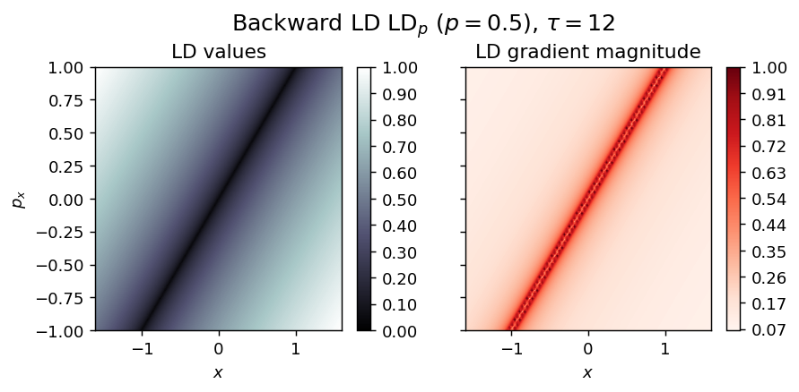
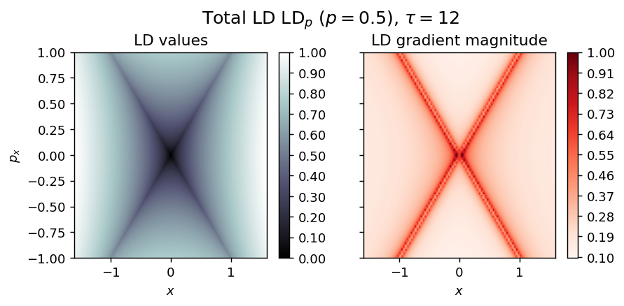
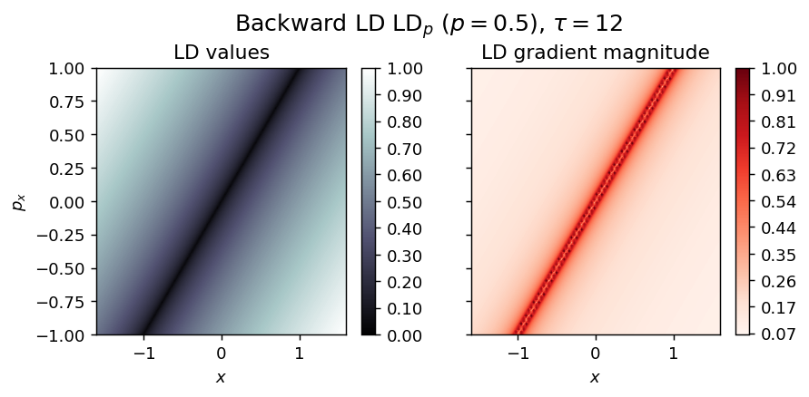
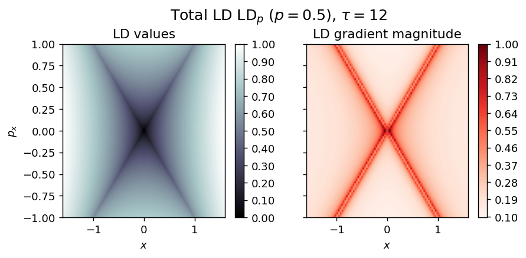

Computing the Lagrangian Descriptors¶
Basic setup: IMPORTANT¶
BEFORE running this Notebook we assume the following
This notebook runs with Python Version
>= 3condasi up-to-date. If not, in the terminal (Linux/Mac) or theConda Prompt(Windows)
conda update --all
If you’re running this notebook and it works fine. That’s good news!
If you get error, please, try the proposed instructions in the next Subsection.
Package requirements¶
DO RUN the following lines, only if the current Notebook doesn’t execute properly.
DON’T RUN the following lines, if
requirements.txtalready satisfied or if Notebook runs fine.
If pip not installed within conda environment, execute the cell below
conda install pip==20.0.2
Install package dependencies
pip install -r requeriments.txt
Benchmark examples¶
import pylds
from pylds.base import compute_lagrangian_descriptor, perturb_field
from pylds.tools import draw_lagrangian_descriptor
from pylds.vector_fields import HamCenter1D, HamSaddle1D, Duffing1D, HamSN1D, Duffing1D_inverted, forcing, HenonHeiles_potential, HenonHeiles_vector_field, NFSaddle_potential, NFSaddle_vector_field
# Integration parameters
tau = 12
# LDp, p-value
p_value = 0.5
# Mesh parameters
x_min,x_max = [-1.6, 1.6]
y_min,y_max = [-1, 1]
Nx, Ny = [200, 200]
Some simple systems¶
Hamilton Centre¶
Energy
\begin{equation*} H(x, y) = \frac{\omega}{2} (y^2 + x^2), \quad \omega > 0 \end{equation*}
Vector field
\begin{align*} \dot{x} &= \frac{\partial H}{\partial y} = f_1(x, y) = \omega y \ \dot{y} &= \frac{\partial H}{\partial x} = f_2(x, y) = -\omega x \end{align*}
grid_parameters = [(x_min, x_max, Nx), (y_min, y_max, Ny)]
vector_field = HamCenter1D
LD_forward = compute_lagrangian_descriptor(grid_parameters, vector_field, tau, p_value)
draw_lagrangian_descriptor(LD_forward, 'forward', grid_parameters, tau, p_value)
LD_backward = compute_lagrangian_descriptor(grid_parameters, vector_field, -tau, p_value)
draw_lagrangian_descriptor(LD_backward, 'backward', grid_parameters, tau, p_value)
LD_total = LD_forward + LD_backward
draw_lagrangian_descriptor(LD_total, 'total', grid_parameters, tau, p_value)
Hamilton Saddle¶
Energy
\begin{equation*} H(x, y) = \frac{\lambda}{2}( y^2 - x^2 ), \quad \lambda > 0 \end{equation*}
Vector field
\begin{align*} \dot{x} &= \frac{\partial H}{\partial y} = f_1(x, y) = -\lambda y \ \dot{y} &= \frac{\partial H}{\partial x} = f_2(x, y) = \lambda x \end{align*}
grid_parameters = [(x_min, x_max, Nx), (y_min, y_max, Ny)]
vector_field = HamSaddle1D
LD_forward = compute_lagrangian_descriptor(grid_parameters, vector_field, tau, p_value)
draw_lagrangian_descriptor(LD_forward, 'forward', grid_parameters, tau, p_value)
LD_backward = compute_lagrangian_descriptor(grid_parameters, vector_field, -tau, p_value)
draw_lagrangian_descriptor(LD_backward, 'backward', grid_parameters, tau, p_value)
LD_total = LD_forward + LD_backward
draw_lagrangian_descriptor(LD_total, 'total', grid_parameters, tau, p_value)
 



Duffing oscillator¶
grid_parameters = [(x_min, x_max, Nx), (y_min, y_max, Ny)]
vector_field = Duffing1D
LD_forward = compute_lagrangian_descriptor(grid_parameters, vector_field, tau, p_value)
draw_lagrangian_descriptor(LD_forward, 'forward', grid_parameters, tau, p_value)
LD_backward = compute_lagrangian_descriptor(grid_parameters, vector_field, -tau, p_value)
draw_lagrangian_descriptor(LD_backward, 'backward', grid_parameters, tau, p_value)
LD_total = LD_forward + LD_backward
draw_lagrangian_descriptor(LD_total, 'total', grid_parameters, tau, p_value)
Example of a perturbed system¶
Harmonically perturbed Duffing oscillator¶
grid_parameters = [(x_min, x_max, Nx), (y_min, y_max, Ny)]
vector_field_original = Duffing1D
vector_field = perturb_field(vector_field_original, forcing)
LD_forward = compute_lagrangian_descriptor(grid_parameters, vector_field, tau, p_value)
draw_lagrangian_descriptor(LD_forward, 'forward', grid_parameters, tau, p_value)
LD_backward = compute_lagrangian_descriptor(grid_parameters, vector_field, -tau, p_value)
draw_lagrangian_descriptor(LD_backward, 'backward', grid_parameters, tau, p_value)
LD_total = LD_forward + LD_backward
draw_lagrangian_descriptor(LD_total, 'total', grid_parameters, tau, p_value)
Example of systems that blow up in finite time¶
Hamilton Saddle-Node¶
###################################
# Integration parameters
t0 = 0
tau = 8
dt = 0.1
# Lp-norm, p-value
p_norm = 1/2
###################################
# Mesh parameters
x_min,x_max = [-1.5, 1]
y_min,y_max = [-1, 1]
###################################
# Box boundaries for Variable Time Integration
box_x_min, box_x_max = [-6, 6]
grid_parameters = [(x_min, x_max, Nx), (y_min, y_max, Ny)]
vector_field = HamSN1D
box_boundaries = [(box_x_min, box_x_max)]
LD_forward = compute_lagrangian_descriptor(grid_parameters, vector_field, tau, p_value, box_boundaries)
draw_lagrangian_descriptor(LD_forward, 'forward', grid_parameters, tau, p_value)
LD_backward = compute_lagrangian_descriptor(grid_parameters, vector_field, -tau, p_value, box_boundaries)
draw_lagrangian_descriptor(LD_backward, 'backward', grid_parameters, tau, p_value)
LD_total = LD_forward + LD_backward
draw_lagrangian_descriptor(LD_total, 'total', grid_parameters, tau, p_value, box_boundaries)

Inverted Duffing oscillator¶
###################################
# Integration parameters
t0 = 0
tau = 10
dt = 0.1
# Lp-norm, p-value
p_norm = 1/2
###################################
# Mesh parameters
x_min,x_max = [-1.5, 1.5]
y_min,y_max = [-1, 1]
###################################
# Box boundaries for Variable Time Integration
box_x_min, box_x_max = [-6, 6]
grid_parameters = [(x_min, x_max, Nx), (y_min, y_max, Ny)]
vector_field = Duffing1D_inverted
box_boundaries = [(box_x_min, box_x_max)]
LD_forward = compute_lagrangian_descriptor(grid_parameters, vector_field, tau, p_value, box_boundaries)
draw_lagrangian_descriptor(LD_forward, 'forward', grid_parameters, tau, p_value)
LD_backward = compute_lagrangian_descriptor(grid_parameters, vector_field, -tau, p_value, box_boundaries)
draw_lagrangian_descriptor(LD_backward, 'backward', grid_parameters, tau, p_value)
LD_total = LD_forward + LD_backward
draw_lagrangian_descriptor(LD_total, 'total', grid_parameters, tau, p_value, box_boundaries)

High-dimensional Hamiltonian systems¶
Henon-Heiles¶
# Integration parameters
t0 = 0
tau = 50
# Lp-norm, p-value
p_value = 1/2
# Mesh visualisation slice parameters
H0 = 1/6 # Energy
ax1_min,ax1_max = [-0.6, 1.2]
ax2_min,ax2_max = [-0.65, 0.65]
N1, N2 = [100, 100]
# Box escape condition
box_boundaries = [[-5, 5], [-5, 5]]
# Miscellaneous grid parameters
dof_fixed = [1,0,0,0] # Variable ordering (x1 x2 y1 y2)
dof_fixed_values = [0] # This can also be an array of values
dof_slice = [0,1,0,1] # Visualisation slice
momentum_sign = 1 # Direction of momentum that defines the slice - (1) positive / (-1) negative
potential_energy = HenonHeiles_potential
vector_field = HenonHeiles_vector_field
slice_parameters = [[ax1_min, ax1_max, N1],[ax2_min, ax2_max, N2]]
grid_parameters = {
'slice_parameters' : slice_parameters,
'dof_slice' : dof_slice,
'dof_fixed' : [dof_fixed, dof_fixed_values],
'momentum_sign' : momentum_sign,
'potential_energy': potential_energy,
'energy_level': H0
}
LD_forward = compute_lagrangian_descriptor(grid_parameters, vector_field, tau, p_value, box_boundaries)
draw_lagrangian_descriptor(LD_forward, 'forward', slice_parameters, tau, p_value)
LD_backward = compute_lagrangian_descriptor(grid_parameters, vector_field, -tau, p_value, box_boundaries)
draw_lagrangian_descriptor(LD_backward, 'backward', slice_parameters, tau, p_value)
LD_total = LD_forward + LD_backward
draw_lagrangian_descriptor(LD_total, 'total', slice_parameters, tau, p_value)
/Users/ba13026/research/lagrangian_descriptors/book/content/pylds/base.py:22: RuntimeWarning: invalid value encountered in sqrt np.sqrt(2*(H0 - V) - (phase_space_momenta**2).sum(axis=1))

Index-1 Normal Form Saddle¶
# Integration parameters
t0 = 0
tau = 10
# Lp-norm, p-value
p_value = 1/2
# Mesh visualisation slice parameters
H0 = 1 # Energy
ax1_min,ax1_max = [-2, 2]
ax2_min,ax2_max = [-2, 2]
N1, N2 = [100, 100]
# Box escape condition
box_boundaries = False
# Miscellaneous grid parameters
dof_fixed = [0,1,0,0] # Variable ordering (x1 x2 y1 y2)
dof_fixed_values = [0] # This can also be an array of values
dof_slice = [1,0,1,0] # Visualisation slice
momentum_sign = -1 # Direction of momentum that defines the slice - (1) positive / (-1) negative
potential_energy = NFSaddle_potential
vector_field = NFSaddle_vector_field
slice_parameters = [[ax1_min, ax1_max, N1],[ax2_min, ax2_max, N2]]
grid_parameters = {
'slice_parameters' : slice_parameters,
'dof_slice' : dof_slice,
'dof_fixed' : [dof_fixed, dof_fixed_values],
'momentum_sign' : momentum_sign,
'potential_energy': potential_energy,
'energy_level': H0
}
LD_forward = compute_lagrangian_descriptor(grid_parameters, vector_field, tau, p_value)
draw_lagrangian_descriptor(LD_forward, 'forward', slice_parameters, tau, p_value)
LD_backward = compute_lagrangian_descriptor(grid_parameters, vector_field, -tau, p_value)
draw_lagrangian_descriptor(LD_backward, 'backward', slice_parameters, tau, p_value)
LD_total = LD_forward + LD_backward
draw_lagrangian_descriptor(LD_total, 'total', slice_parameters, tau, p_value)
Double well potential¶
import numpy as np
def DoubleWell2DoF_vector_field(t, u, PARAMETERS = [None]):
"""
Returns 1D vector field of the Duffing oscillator, for an array of points in phase space.
Number of model parameters: 0 . PARAMETERS = [None]
Functional form: v = (y, x - x**3), with u = (x, y)
Parameters
----------
t : float
fixed time-point of vector field, for all points in phase space.
u : array_like, shape(n,)
Points in phase space.
PARAMETERS : list of floats
Vector field parameters.
Returns
-------
v : array_like, shape(n,)
Vector field corresponding to points u, in phase space at time t.
"""
N_dof = u.shape[-1]
points_positions = u.T[:int(N_dof/2)]
points_momenta = u.T[int(N_dof/2):]
x, y = points_positions
p_x, p_y = points_momenta
# Hamiltonian Model Parameter
# Vector field defintion
v_x = p_x
v_y = p_y
v_p_x = x - x**3
v_p_y = -y
v = np.array([v_x, v_y, v_p_x, v_p_y]).T
return v
def DoubleWell2DoF_potential(positions, PARAMETERS = None):
x, y = positions.T
# Function parameters
# None
# Potential energy function
V = (1/4)*x**4 - (1/2)*x**2 + (1/2)*y**2
return V
# Integration parameters
t0 = 0
tau = 10
# Lp-norm, p-value
p_value = 1/2
# Mesh visualisation slice parameters
H0 = 1 # Energy
ax1_min,ax1_max = [-2, 2]
ax2_min,ax2_max = [-2, 2]
N1, N2 = [200, 200]
# Box escape condition
box_boundaries = False
# Miscellaneous grid parameters
dof_fixed = [0,1,0,0] # Variable ordering (x y p_x p_y)
dof_fixed_values = [0] # This can also be an array of values
dof_slice = [1,0,1,0] # Visualisation slice
momentum_sign = 1 # Direction of momentum that defines the slice - (1) positive / (-1) negative
potential_energy = DoubleWell2DoF_potential
vector_field = DoubleWell2DoF_vector_field
slice_parameters = [[ax1_min, ax1_max, N1],[ax2_min, ax2_max, N2]]
grid_parameters = {
'slice_parameters' : slice_parameters,
'dof_slice' : dof_slice,
'dof_fixed' : [dof_fixed, dof_fixed_values],
'momentum_sign' : momentum_sign,
'potential_energy': potential_energy,
'energy_level': H0
}
LD_forward = compute_lagrangian_descriptor(grid_parameters, vector_field, tau, p_value)
draw_lagrangian_descriptor(LD_forward, 'forward', slice_parameters, tau, p_value)
LD_backward = compute_lagrangian_descriptor(grid_parameters, vector_field, -tau, p_value)
draw_lagrangian_descriptor(LD_backward, 'backward', slice_parameters, tau, p_value)
LD_total = LD_forward + LD_backward
draw_lagrangian_descriptor(LD_total, 'total', slice_parameters, tau, p_value)
HOW-TOs¶
Change parameters of built-in vector fields¶
FIRST Check vector field parameters using help
import pylds
help(pylds.vector_fields.HamCenter1D)
Help on function HamCenter1D in module pylds.vector_fields:
HamCenter1D(t, u, PARAMETERS=[1])
Returns 1D Hamilton-Centre vector field at time t, for an array of points in phase space.
Number of model parameters: 1 . PARAMETERS = [omega]
Functional form: v = (omega*y, - omega*x), with u = (x, y)
Parameters
----------
t : float
fixed time-point of vector field, for all points in phase space
u : array_like, shape(n,)
points in phase space to determine vector field at time t
PARAMETERS : list of floats
vector field parameters
Returns
-------
v : array_like, shape(n,)
vector field corresponding to points u, in phase space at time t
SECOND Define the input vector_field to compute LDs, just editing the value of PARAMETERS, here we set omega = 2.5
import pylds
vector_field = lambda t,u : pylds.vector_fields.HamCenter1D(t, u, PARAMETERS=[2.5])
Working with my own vector field¶
Setting up the code to draw the LDs of your own function requires only THREE simple steps
EXAMPLE
Suppose we have a 2D vector field of the form
\begin{align*} f_1(x, y) &= \alpha y \ f_2(x, y) &= \beta \cdot cos(\gamma x^3) \end{align*}
FIRST Define my_vector_field function
See how it’s done below
import numpy as np
def my_vector_field(t, u, PARAMETERS = [2, 0.5, 3]):
"""
Returns 1D Hamilton-Saddle vector field at time t, for an array of points in phase-space.
Number of model parameters: 1 . PARAMETERS = [alpha, beta, gamma]
Functional form: v = (alpha*y, beta*x + gamma*x**4), with u = (x, y)
Parameters
----------
t : float
fixed time-point of vector field, for all points in phase-space.
u : array_like, shape(n,)
points in phase-space to determine vector field at common time t.
PARAMETERS : list of floats
vector field parameters
Returns
-------
v : array_like, shape(n,)
vector field corresponding to points u, in phase-space at time t
"""
x, y = u.T
##############################################
#
# CHANGE THIS STUFF BELOW ONLY
#
##############################################
# Hamiltonian Model Parameter
alpha, beta, gamma = PARAMETERS
v = np.array([ alpha * y, beta * np.cos(gamma * x**3)]).T
##############################################
#
# CHANGE THIS STUFF ABOVE ONLY
#
##############################################
return v
Then, the input vector_field for computation of LDs will be
vector_field = my_vector_field
SECOND Set your general input parameters
import pylds
# Integration parameters
t0 = 0 # Starting time for integration
tau = 8 # Length integration
dt = 0.1 # Timestep
# Lp-norm, p-value
p_norm = 1/2
# Mesh parameters
x_min,x_max = [-1.6, 1.6]
y_min,y_max = [-1, 1]
Nx, Ny = [300, 300]
THIRD Compute and Visualise your desired Lagrangian Descriptors
Note The only difference for LD_backward is the time_interval = (t0, t0 - tau, dt)
FUTURE DEVELOPMENT¶
Higher dimensions
Computation of LDs gradient to draw invariant manifolds
Enhancements in the implementation